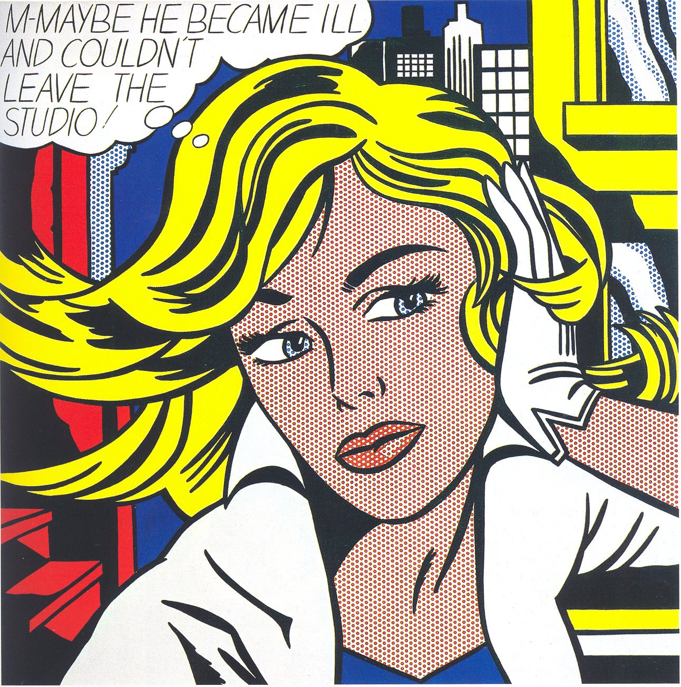
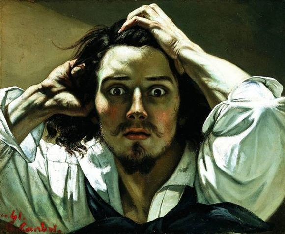
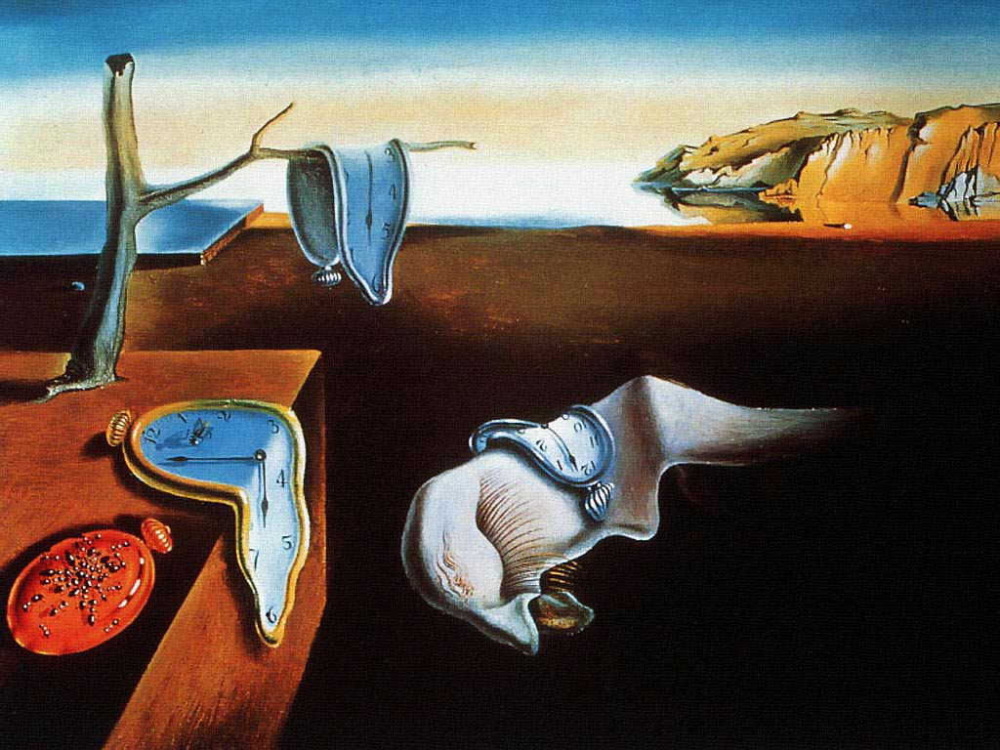

| ЭКСПРЕССИОНИЗМ (от лат. expressio, «выражение») — течение в европейском искусстве эпохи модернизма, получившее наибольшее развитие в первые десятилетия XX века, преимущественно в Германии и Австрии. |
 |
МОДЕРНИЗМ (произошло от итал. modernismo — «современное течение») — общее название направлений искусства и литературы конца 19-20 века: кубизм, дадаизм, сюрреализм, модерн, футуризм, экспрессионизм, абстрактное искусство, функционализм, неоимпрессионизм, постимпрессионизм и т. п. |
 |
НЕОКЛАССИЦИЗМ, Де Стиль — термин, обозначающий художественные явления последней трети XIX-XX вв., которым присуще обращение к традициям античного искусства, искусства эпохи Возрождения или классицизма. Возникновение неоклассицизма обусловлено стремлением противопоставить некие «вечные» эстетические ценности тревожной и противоречивой реальности. Самый известный художник этого направления живописи: Адольф Вильям Бугро (1825-1905) |
 |
КУБИЗМ (от фр. cubisme, произошло от cube — куб) — модернистское направление в живописи начала ХХ века, которое выдвинуло на первый план формальную задачу конструирования объёмной формы на плоскости, сведя к минимуму изобразительно-познавательные функции искусства. Слово «кубисты» было употреблено в 1908 и 1909 французским критикомЛ. Воселем как насмешливое прозвище группы художников, изображавших предметный мир в виде комбинации геометрических тел или фигур. Самый известный художник этого направления живописи: Пабло Пикассо (1881-1973). |
|  | ПОП-АРТ (произошло от англ. popular art — популярное, общедоступное искусство или от pop — отрывистый звук, лёгкий хлопок) — буквально: искусство, производящее взрывной, шокирующий эффект — неоавангардистское направление в изобразительном искусстве. Поп арт получил распространение со 2-й половины 1950-х гг. в США. Художники этого направления воспроизводят буквально типичные предметы современного быта (вещи домашнего обихода, упаковку товаров, фрагменты интерьеров, детали машин…), популярные печатные изображения известных личностей, вырезки из газет или включают эти предметы и изображения в композиции. Отличительная черта поп-арта — сочетание вызова с безразличием. Все одинаково ценно или бесценно, одинаково красиво или безобразно, одинаково достойно или недостойно. Самые известные художники поп арта: Джаспер Джонс, Роберт Раушенберг и Энди Уорхол. |
|  | РОМАНТИЗМ (произошло от фр. romantisme) — идейное и художественное направление в европейской и американской живописи конца 18 — начала 19 веков, выдвигавшее на первый план индивидуальность, наделяя ее идеальными устремлениями. Романтизм выделял главенство воображения и чувств. Его основная социально-идеологическая предпосылка — разочарование в буржуазной цивилизации, в социальном, промышленном, политическом и научном прогрессе. Самые известные живописцы этого жанра: Э. Делакруа, И.К. Айвазовский (1817-1900). |
| РЕАЛИЗМ (произошло от лат. геalis — вещественный, действительный) — направление в искусстве, характеризующееся изображением социальных, психологических и прочих явлений, максимально соответствующим действительности. Самые известные реалисты: Илья Репин, Иван Шишкин, Василий Поленов, Василий Суриков, Исаак Левитан. |
|  | СЮРРЕЛИАЛИЗМ — направление в литературе и искусстве двадцатого века, сложившееся в 1920-х годах в художественной культуре западного авангардизма. Отличается использованием аллюзий и парадоксальных сочетаний форм. Считается, что сюрреализм развивался более сорока лет, до появления новых течений 1960-х годов. |
 |
СИМВОЛИЗМ (происходит от фр. symbolisme) — одно из крупнейших направлений в искусстве (в литературе, музыке и живописи), возникшее во Франции в 1870-80-х гг. и достигшее наибольшего развития на рубеже XIX и XX веков, прежде всего в самой Франции, Бельгии и России. Символисты радикально изменили не только различные виды искусства, но и само отношение к нему. Их экспериментаторский характер, стремление новаторству, космополитизм и обширный диапазон влияний стали образцом для большинства современных направлений искусства. Художники символисты: Обри Бердслей, Михаил Врубель. |